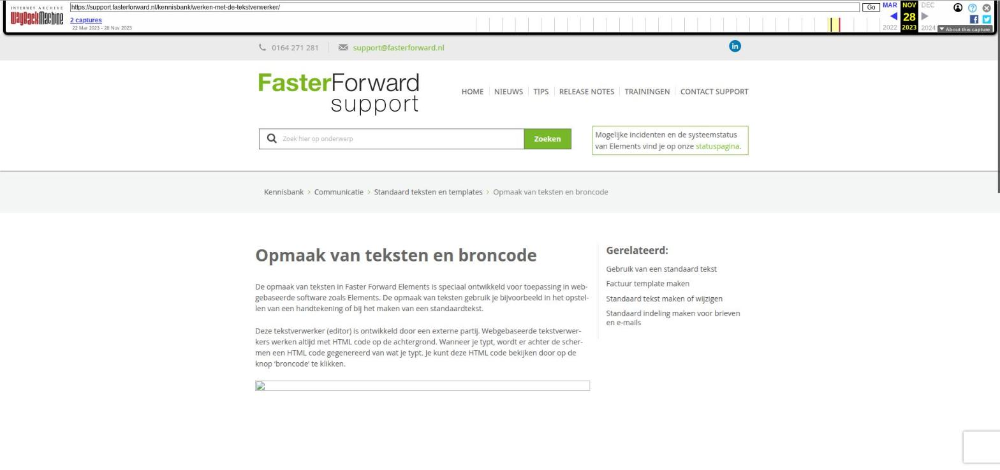

Opmaak van teksten en broncode

Tekstinhoud
Opmaak van teksten en broncode
De opmaak van teksten in Faster Forward Elements is speciaal ontwikkeld voor toepassing in webgebaseerde software zoals Elements. De opmaak van teksten gebruik je bijvoorbeeld in het opstellen van een handtekening of bij het maken van een standaardtekst.
Deze tekstverwerker (editor) is ontwikkeld door een externe partij. Webgebaseerde tekstverwerkers werken altijd met HTML code op de achtergrond. Wanneer je typt, wordt er achter de schermen een HTML code gegenereerd van wat je typt. Je kunt deze HTML code bekijken door op de knop 'broncode' te klikken.
Deze HTML code kan je zelf ook bewerken, maar hiervoor is basiskennis van HTML wel een vereiste.
HTML elementen
Element / Toelichting
body — Dit is het hoofdelement van iedere HTML pagina en wordt standaard door de editor ingevoegd
p — 'Paragraph'; deze wordt ingevoegd op het moment dat u op de Enter toets drukt. Er wordt een nieuwe paragraaf gestart
br — 'Break'; wanneer u SHIFT + Enter tegelijkertijd indrukt zal een korte enter worden ingevoegd
table / tbody — Het begin van iedere tabel die u in de editor invoegt
tr — 'Table row'; elke rij in een tabel wordt voorafgegaan door dit element
td — 'Table data'; staat voor elke cel in een rij
span — Wanneer de tekst opmaak wordt gewijzigd, zal dit door middel van 'spans' worden gedaan
font — Een verouderd html element waarin tekst opmaak wijzigingen werden weergegeven
u / em / strong — 'Underline, emphasized, strong'; Tekst onderstrepen, schuin drukken en dik drukken
ol / ul / li — 'Ordered list, unordered list, list item'; Een genummerde lijst (1, 2, 3, etc), een bullet-lijst en een lijst item (dus een puntje in de lijst)
img — 'Image'; Wanneer een plaatje wordt ingevoegd in de tekst zal dit in een image tag worden gedaan
Laatste update: 28 september 2022
Was deze informatie nuttig?
Ja Nee